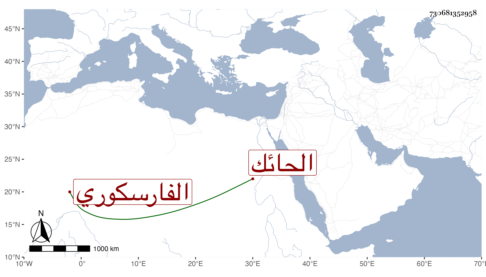

0902Sakhawi.DawLamic.ITO20230111-ara1.EIS1600.730681352958
Biography ID: 730681352958
729
علي بن حسين بن مكي بن جدي الفارسكوري الحائك بها . ولد فيها تقريبا سنة ثمان وعشرين وثمانمائة ونشأ عاميا فولع بالمواليا ولقيته هناك فكتبت عنه منها قوله :
| قامة قوامك سما فيها جميع الفلك | مركبة والقمر وجهك وشعرك حلك |
| والصبح من فرقك الباهي برز في ملك | قاتل جيوش الدجى يا غصن صار وأهلك |
إلى غير ذلك مما أثبته في موضع آخر .
